Ravi Kumar
International Relations and Political Science
Department of International Relations and Political Science, Central University of Kerala. PhD thesis submitted; viva awaited. Research on status and recognition in international relations, region formation and rising-power strategy, India’s foreign and nuclear policy, and the Indo-Pacific.
Available to join at short notice.
Also co-author of UGC NET Paper 1: Teaching and Research Aptitude, Unit-wise Question Bank (2026) and author of its free companion booklet.
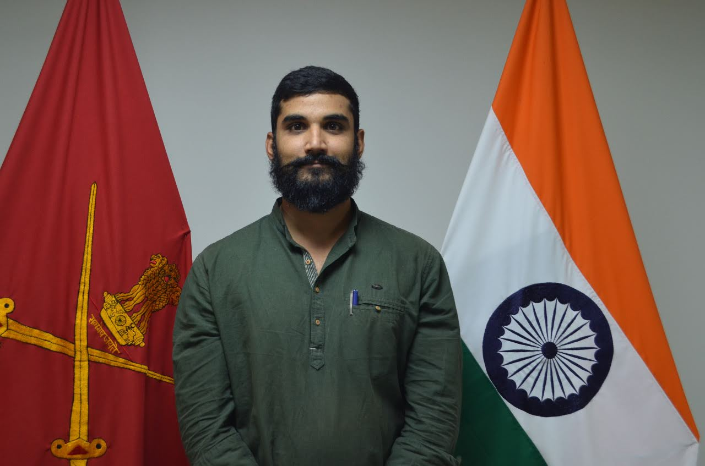
Biography
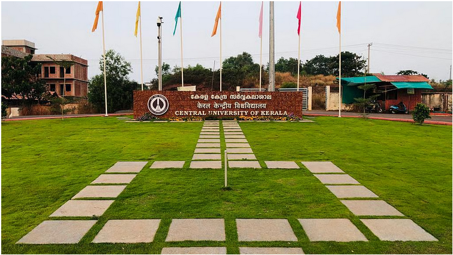
Ravi Kumar is a Senior Research Fellow and PhD candidate in the Department of International Relations and Political Science at the Central University of Kerala. His doctoral thesis, Status, Regions, and Rising Powers in the Emerging World Order: A Case Study of India, has been submitted, and the viva is awaited.
His research examines status and recognition in international relations, region formation and rising-power strategy, India’s foreign and nuclear policy, and the Indo-Pacific. The thesis develops Regional Status Theory, which holds that rising powers build and lead regions to secure recognition, and tests it across four Indian cases from 1945 to the present using archival sources, a coded corpus of parliamentary debate and Ministry of External Affairs records. His articles are published in or forthcoming from India Review, World Affairs and other journals, and he has released open datasets of Lok Sabha and Rajya Sabha debates on Harvard Dataverse.
He holds an MPhil in Political Science from the University of Rajasthan, and an MA in Political Science (University Gold Medal) and an MSc in Mathematics from Maharshi Dayanand University. He is UGC-NET qualified in Political Science and in International and Area Studies.
Research Profile
My research asks how rising powers seek recognition of higher rank in international politics. My doctoral thesis develops Regional Status Theory: rising powers build and lead regions to secure recognition, rather than acquiring regional leadership as a by-product of rising. I test the theory across four Indian cases from 1945 to the present, using archival sources, a coded corpus of parliamentary debate and Ministry of External Affairs records.
A second line of work studies how India’s foreign and nuclear policy has been argued in Parliament, using open corpora of Lok Sabha and Rajya Sabha debates from 1952 to the present. A third examines status competition and maritime strategy in the Indo-Pacific, including India’s SAGAR initiative.
Status and recognition
How states seek, signal and obtain recognition of rank; India’s status-seeking in a multiplex world order.
Region formation and rising powers
Region-building as a status strategy, from Nehru’s Asian project to the Indo-Pacific.
India’s foreign and nuclear policy in Parliament
Seventy-five years of parliamentary debate on foreign and nuclear policy, 1948–2025.
Indo-Pacific and maritime security
China–India rivalry in the Indian Ocean Region; SAGAR and the maritime security multiplex.
Methods: archival research (Prime Ministers’ Museum and Library; National Archives of India); coded corpora of parliamentary debate; quantitative analysis in R; expert surveys.
Publications
Five journal articles (four accepted), two book chapters, eleven book reviews, three open datasets and five manuscripts under review or submitted. Sole author unless a co-author is named.
Books
UGC NET Paper 1: Teaching and Research Aptitude, Unit-wise Question Bank
Journal Articles
Status Competition or Conflict of Interest: Understanding China-India Asymmetrical Rivalry in the Indian Ocean Region
The Floor and the World: Seventy-Five Years of India’s Foreign Policy in Parliament
The Missing Middle: The Regional Scale of India’s Quest for Major-Power Status
SAGAR and the Maritime Security Multiplex: Evolution and Challenges
Multiplex, Multipolarity, and India’s Status Seeking in World Order
Book Chapters
India’s Afghanistan Challenge: Mapping Viability of Maritime Routes
India’s Indo-Pacific Approach: The Evolution, Opportunities, and Challenges of SAGAR
Datasets & Open Research Resources
Lok Sabha Debates (India)
Rajya Sabha Debates (India)
Foreign Affairs Record (MEA), 1955–1999: Markdown Archive
Under Review & Submitted
Building a Region to Claim a Rank: Nehru’s Asian Project and the Regional Politics of Status, 1945–1962
Audience Segmentation in India’s Status-Seeking: The Quad, SAGAR and the Global South in the Indo-Pacific
The Evolution of India’s Nuclear Policy in Parliament: From the 1948 Atomic Energy Act to the 2025 SHANTI Act
Status of India’s Status in the Existing World Order
India and the Global Nuclear Order: Seeking Status Through Identity Management Strategy
Book reviews are listed in the Book Reviews section.
Book Reviews
Reviews published in or accepted by journals and magazines, most recent first.
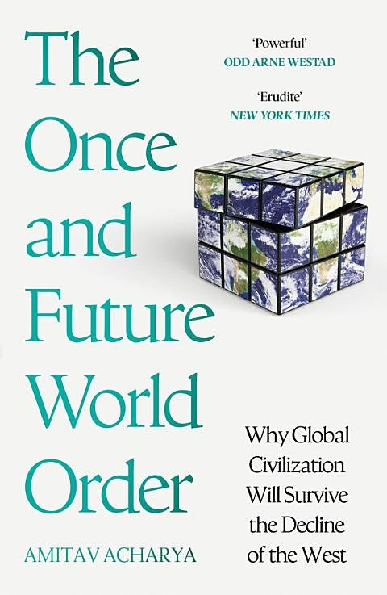
The Once and Future World Order: Why Global Civilization Will Survive the Decline of the West
Amitav Acharya
Acharya argues that global civilisation will outlast the decline of Western primacy, extending his earlier work on multiplexity. The review takes the book seriously as theory and tests its claims against rival accounts of the present transition.
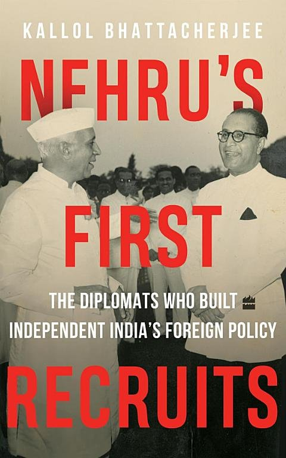
Nehru’s First Recruits: The Diplomats Who Built Independent India’s Foreign Policy
Kallol Bhattacherjee
A group portrait of the early diplomats who staffed India’s foreign service and shaped its initial conduct on the world stage. The review treats the book as biographical history with implications for how Indian diplomatic identity was made.
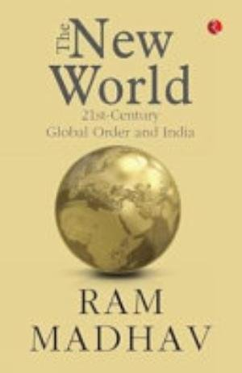
The New World: 21st Century Global Order and India
Ram Madhav
Madhav offers a reading of the emerging twenty-first century order and India’s role within it. The review locates the book in the wider debate on civilisational and ideological framings of Indian foreign policy.
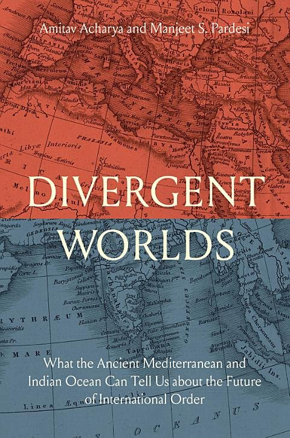
Divergent Worlds: What the Ancient Mediterranean and Indian Ocean Can Tell Us about the Future of International Order
Amitav Acharya & Manjeet S. Pardesi
A comparative inquiry into the ancient Mediterranean and Indian Ocean systems and what they suggest about the futures available to the present order. The review reads the book as an extension of Acharya’s multiplex framework and a sustained provocation to Eurocentric IR.
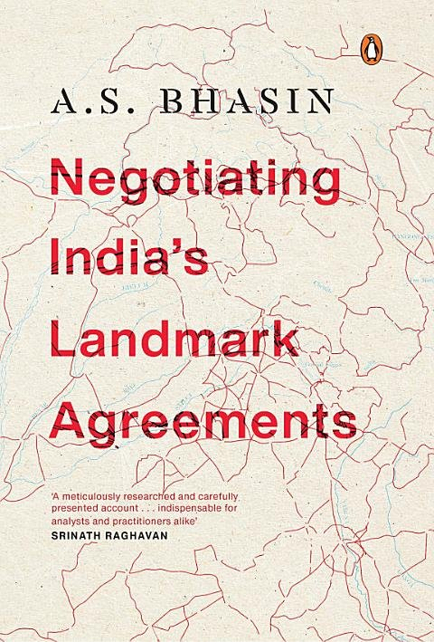
Negotiating India’s Landmark Agreements
A. S. Bhasin
Bhasin reconstructs the bargaining behind several of independent India’s most consequential agreements, drawing on archival material and personal access. The review treats the book as a contribution to negotiation history rather than to IR theory.
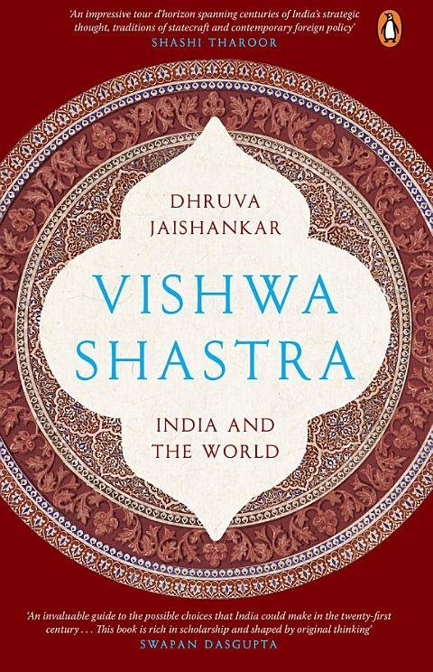
Vishwa Shastra: India and the World
Dhruva Jaishankar
A wide-ranging survey of India’s evolving worldview and its place in the present international system. The review weighs the book’s synthetic ambition against the question of whether it adds an analytical frame to the historical record.
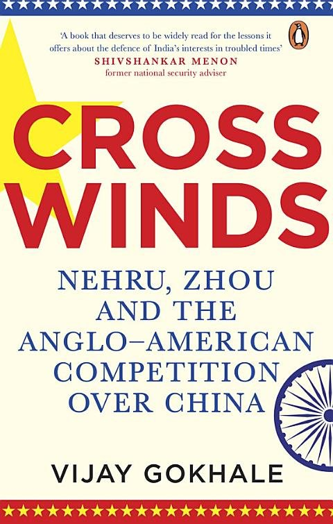
Crosswinds: Nehru, Zhou and the Anglo-American Competition over China
Vijay Gokhale
Gokhale revisits the Nehru-Zhou years through the wider Anglo-American contest for influence over Beijing. The review reads the book both as diplomatic history and as a former practitioner’s reading of Indian China policy.
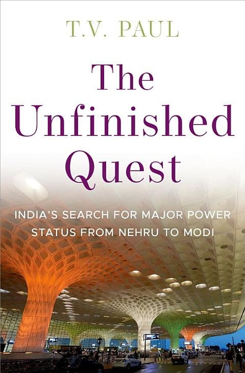
The Unfinished Quest: India’s Search for Major Power Status from Nehru to Modi
T. V. Paul
Paul argues that India has long pursued major power status without converting recognition into structural standing. A central reference for contemporary debates on Indian status politics and a recurring point of engagement in my own work.
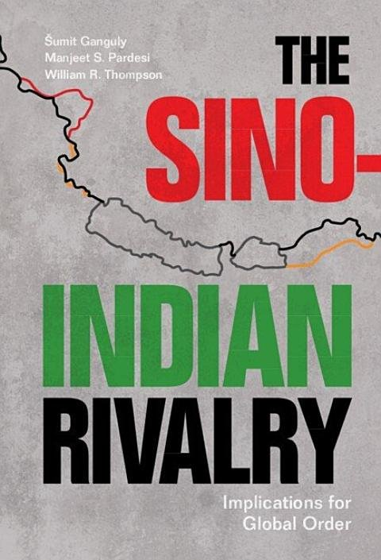
The Sino-Indian Rivalry: Implications for Global Order
Sumit Ganguly, Manjeet S. Pardesi & William R. Thompson
The authors trace the long arc of Sino-Indian competition and ask whether it carries weight for the wider order. The review situates the book within strategic rivalry theory and against alternative readings of India-China competition.
Talks and Conference Papers
Conferences and Workshops
4th South Asia Conference, “Borders and Connectivity in South Asia”
Norbuling Rigter College, Paro, Bhutan
Accepted: The Map Behind the PlatformInternational Seminar: Philosophical Foundation & Operational Pragmatism of Bharat
Dept. of IR, Central University of Kerala
Paper: Multiplex, Multipolarity, and India’s Status Seeking in World OrderAll Kerala Political Science Conference & International Seminar on World Peace
University of Kerala, Thiruvananthapuram
Paper: India and the Global Nuclear Order: Seeking Status Through Identity Management StrategyTetso College International Conference
Tetso College, Nagaland
Paper: Multiplex, Multipolarity, and India’s Status Seeking in World OrderIndia Ideas @ 2047: Emerging Contours of Foreign Policy & Security Strategy
Gujarat University, Ahmedabad
Paper: India’s Status in the Indo-Pacific Region: Identity Management, the Quad, and SAGARICSSR Sponsored 10-Day Research Methodology Course
Centre for Defence & Security Studies, Central University of Kerala
ParticipantOne Week Conference on Research Methods in Social Sciences
Social Science Research Centre, University of Rajasthan, Jaipur
ParticipantConference on Extremism in Afghanistan & Impact on India and Asia
Dept. of Political Science, Central University of Haryana
ParticipantInvited Lectures
Emerging Trends in India–United States Relations
Payyanur College, Kerala
Invited LecturerA New Thrust in India-China Relations: Militarised Frontiers
Final-year undergraduates, Dept. of Political Science, E.K. Nayanar Memorial Govt. College, Kasaragod
Invited LecturerRecent Trends in Public Policy and Public Administration
Capital Centre, Central University of Kerala
Invited Speaker (theme paper)Introduction to Reference Management Software: Zotero
Undergraduate session, Sree Narayana College, Chempazhanthy, Thiruvananthapuram
Invited SpeakerTeaching
Courses taught
Central University of Kerala, as part of the academic duties of a Junior and Senior Research Fellow.
- Undergraduate (BA): Science, Technology and International Relations, Capital Centre, Thiruvananthapuram. Prepared the course material and took the classes.
- Postgraduate (MA): Academic Writing and Research Tools for Social Science Research, through the Department’s Research Forum (LaTeX dissertation template, Zotero, RStudio, Datawrapper).
- Resource person, Department’s Expert Talk on Zotero and LaTeX for Academic Writing (2026).
Courses prepared to teach
- Core
- Introduction to International Relations; International Relations Theory; India’s Foreign Policy; Status and Rising Powers in World Politics.
- Specialist
- Indo-Pacific Security and Maritime Strategy; Nuclear Politics and the Global Nuclear Order; India and the Multiplex World Order; Critical and Emerging Technologies in International Politics.
- Methods
- Quantitative Methods for the Social Sciences (R); Qualitative Research Design; Research Methodology and Academic Writing; Data Visualisation for the Social Sciences.
Teaching-related service
- NTA-NET Coordinator: UGC-NET Paper I preparation classes for research scholars and postgraduate students.
- Research Forum Coordinator: weekly book review series (2025).
- Invited lectures to undergraduate students (see Talks and conference papers).
Teaching resources
- LaTeX supervision toolkit and offline submission tracker for PhD scholars (GitHub (opens in a new tab)).
- Interactive reader’s companion to George Perkovich, India’s Nuclear Bomb.
- Companion booklet to the UGC NET Paper 1 question bank.
Curriculum Vitae
The full CV is available as a PDF (opens in a new tab), updated 20 November 2026.
Education
PhD in International Relations and Political Science
Central University of Kerala, Department of International Relations and Political Science
Doctoral thesis: Status, Regions, and Rising Powers in the Emerging World Order: A Case Study of India. Thesis submitted; viva awaited. Supervisor: Dr Sivakumar M V (previous supervisor: Dr Uma Purushothaman). Course work GPA: 8.80/10. Funded by UGC JRF/SRF.
MPhil in Political Science
University of Rajasthan, Department of Political Science
Dissertation: Status Signaling through Conspicuous Do-goodism: Exploring India’s Status in World Order.
Master of Arts in Political Science
Maharshi Dayanand University, Department of Political Science
CGPA: 7.86 · University Gold Medallist
Master of Science in Mathematics
Maharshi Dayanand University, Department of Mathematics
CGPA: 6.90
BSc (Honours) in Mathematics
Maharshi Dayanand University
Research Positions
PhD Candidate (UGC SRF from 2024)
Central University of Kerala
Developed Regional Status Theory and tested it across four Indian cases, 1945 to the present. Four articles accepted; five manuscripts submitted or under review.
Research Assistant, PMML
Prime Ministers’ Museum and Library (PMML), New Delhi
Conducted archival research on the Bandung Conference for Dr Vineet Thakur, Leiden University.
Research Assistant, ICSSR Minor Research Project
Indian Council of Social Science Research, New Delhi
Topic: India’s SAGAR Initiative in the Indo-Pacific Region and its Possible Outcomes and Challenges. Co-designed the research instrument, administered an expert survey of 70 regional specialists, and co-authored the final report and the resulting journal article (accepted).
Research Intern
Centre for Land Warfare Studies, New Delhi
Joined the team that managed the National Seminar on “Civil-Military Integration: The Way Forward” and published two book reviews.
Awards, Fellowships and Funding
University Gold Medal, MA Political Science
Senior Research Fellowship (UGC-SRF)
Junior Research Fellowship in Political Science
UGC-NET in Political Science and in International and Area Studies
Archival Research Award, Bandung Conference study
Research Assistant Grant
Academic Service and Professional Activity
- Peer review: International Journal: Canada’s Journal of Global Policy Analysis (verified through ORCID).
- Research Forum Coordinator: organises scholar and student research presentations, book reviews and departmental events; started the Forum’s weekly book review series (2025).
- NTA-NET Coordinator: National Testing Agency (NTA); organises UGC-NET Paper I preparation classes for research scholars and postgraduate students.
- Public GitHub tools: maintains a LaTeX supervision toolkit for thesis writing and an offline submission tracker for PhD scholars (GitHub (opens in a new tab)).
- Translator (part-time), Stimson Center, Washington, DC, 2023–present; translation for the online magazine South Asian Voices.
- Sponsorship Coordinator, International Association for Political Science Students (IAPSS), 2023.
- Memberships: IAPSS; New Zealand Institute of International Affairs.
Methods, Skills and Languages
Quantitative and qualitative
RStudio; data cleaning and analysis of large datasets; thematic coding of interviews, policy documents and parliamentary transcripts.
Archival and tools
Registered reader, Prime Ministers’ Museum and Library and National Archives of India, New Delhi; LaTeX, Git and GitHub, Office 365 and Zotero; Tableau and Datawrapper for data visualisation.
Methods training
ICSSR-sponsored research methodology courses (2024); National Workshop on Research Methods in Social Science (2023); certified SWAYAM and Stimson Center courses (2024–2025).
Languages
Hindi (native); English (fluent, academic and professional; IELTS Academic overall band 7.0, 2021).
Academic profiles
Referees
Available on request.
UGC NET Paper 1: Teaching and Research Aptitude
A unit-wise question bank for UGC NET Paper 1, organised by the ten units of the syllabus. First Edition, 2026.
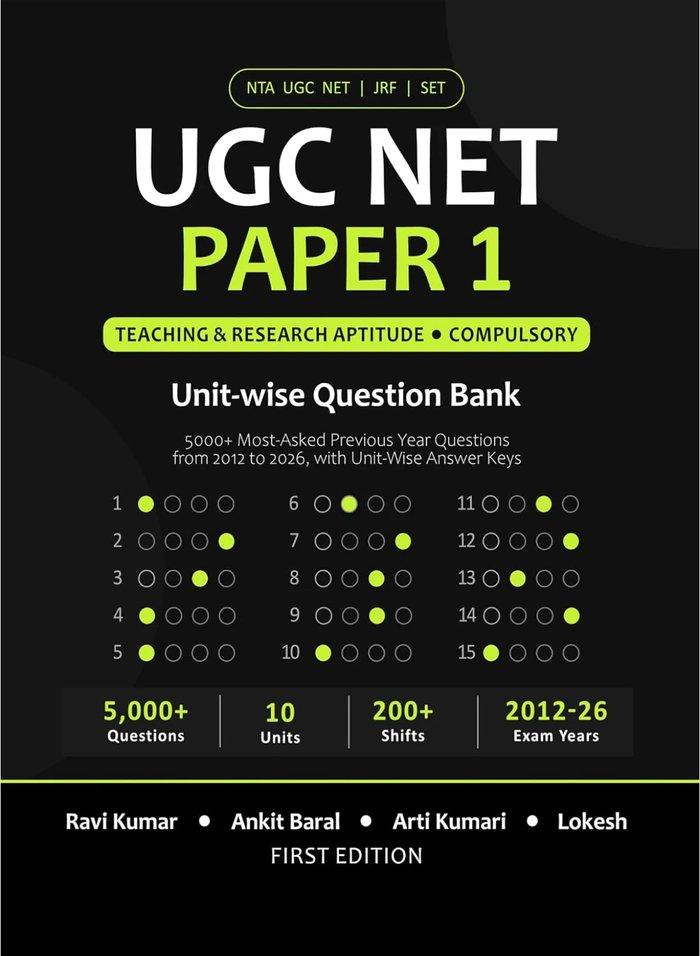
UGC NET Paper 1: Teaching and Research Aptitude
Unit-wise Question Bank · First Edition, 2026
More than 5,000 previous-year questions (2012–2026) from over 200 exam shifts, arranged by the ten units of the UGC NET Paper 1 syllabus, with unit-wise answer keys.
- Authors Ravi Kumar, Ankit Baral, Arti Kumari, Lokesh
- Edition First Edition, 2026
- Coverage 5,000+ previous-year questions, 2012–26, in 10 units
- Available on Amazon India
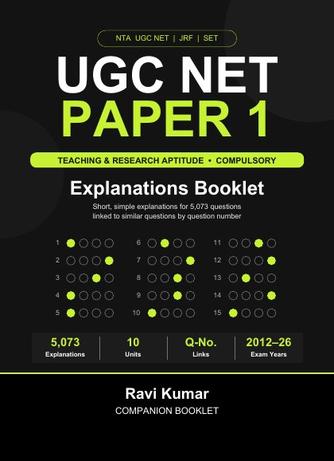
Explanations and Connections
Companion to the Unit-wise Question Bank · Version 1.0, November 2026
- 298 pages
- PDF · 3.9 MB
- 5,073 explanations
- 10 units + concept index
- v1.0 · Nov 2026
Contents
- Unit ITeaching Aptitudep. 6
- Unit IIResearch Aptitudep. 41
- Unit IIIComprehensionp. 77
- Unit IVCommunicationp. 94
- Unit VMathematical Reasoning and Aptitudep. 124
- Unit VILogical Reasoningp. 158
- Unit VIIData Interpretationp. 188
- Unit VIIIInformation and Communication Technologyp. 205
- Unit IXPeople, Development and Environmentp. 234
- Unit XHigher Education Systemp. 263
- IndexConcept indexp. 290
How to use it
- Attempt a unit’s questions in the book.
- Check each answer here by question number; read the Why and any Trap line.
- Follow the “See also” links (Q12 inside a unit, U1 Q12 across units), then revise with the concept index before the exam.
The question bank and the companion booklet are independent publications, not published, sponsored or endorsed by the NTA or the UGC. Corrections are welcome via the Contact page.
Reading Notes
Books currently being read, followed by short notes on finished titles.
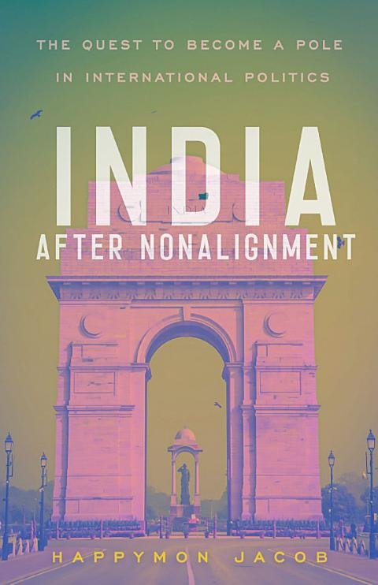
India After Nonalignment: The Quest to Become a Pole in International Politics
Happymon Jacob
Jacob traces India’s move beyond non-alignment and its quest to become a pole in international politics. Directly relevant to my work on India’s status seeking and the multiplex world order.
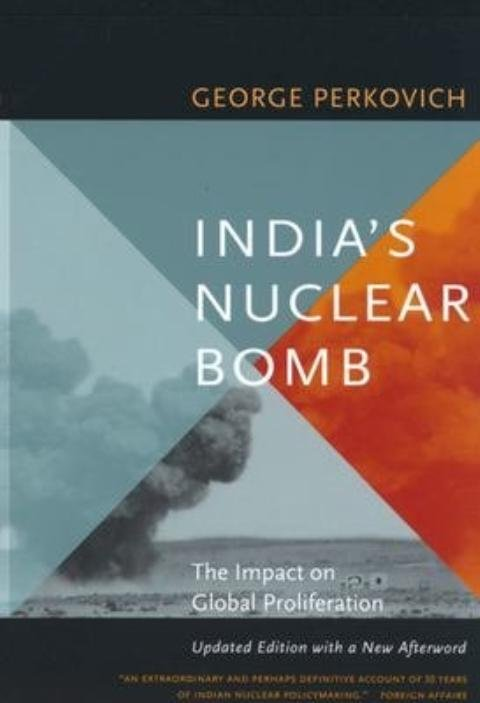
India’s Nuclear Bomb: The Impact on Global Proliferation
George Perkovich
Perkovich’s classic study of India’s nuclear weapons programme and its consequences for global proliferation. Background for the nuclear-order strand of my research. An interactive reader’s companion to the book is available.
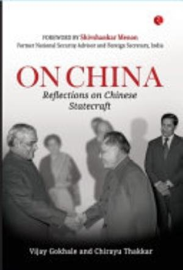
On China: Reflections on Chinese Statecraft
Vijay Gokhale & Chirayu Thakkar
Reflections on Chinese statecraft by former Foreign Secretary Vijay Gokhale and Chirayu Thakkar, with a foreword by Shivshankar Menon.
Notes on Finished Books
Short notes on 37 titles.
Social Theory of International Politics
Alexander Wendt
Wendt argues that anarchy is not a fixed fact of world politics. It is something states make through the way they treat each other. The book is the main statement of constructivism, and it shows how shared ideas shape what states want and who they think they are.
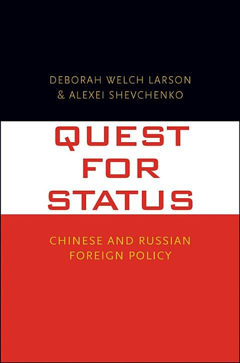
Quest for Status: Chinese and Russian Foreign Policy
Deborah Welch Larson & Alexei Shevchenko
A study of how Russia and China have gone after recognition as great powers since the end of the Cold War. The authors compare the different routes each has taken, from trying to join the club to competing with it.
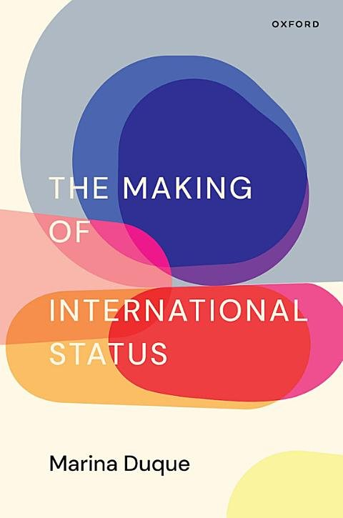
The Making of International Status
Marina Duque
Duque treats status as something built in the interactions between states, not something a state simply owns. I keep it close as an anchor for the status literature I work with.
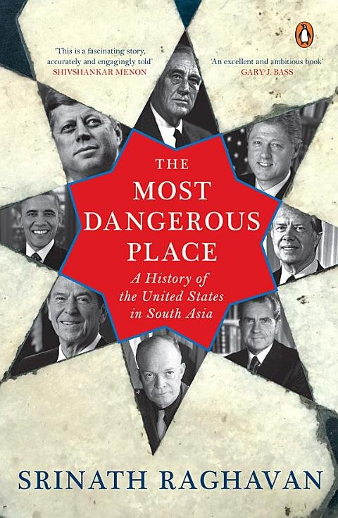
The Most Dangerous Place: A History of the United States in South Asia
Srinath Raghavan
A history of how the United States has shaped South Asia since the 1940s, and how the region pushed back on American policy. Raghavan follows the ties with India, Pakistan and Afghanistan through the Cold War and after.
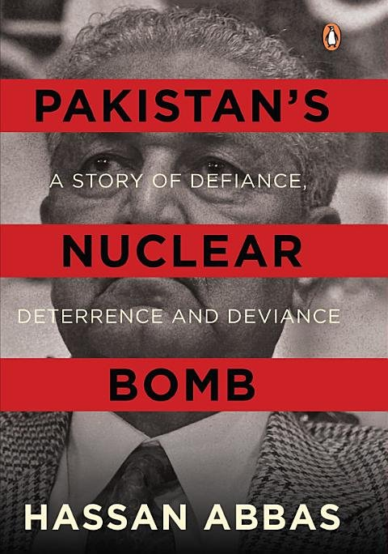
Pakistan’s Nuclear Bomb: A Story of Defiance, Deterrence and Deviance
Hassan Abbas
Abbas traces how Pakistan got the bomb and why it wanted it. The story runs through the army, the scientists and the procurement networks that kept the programme going.
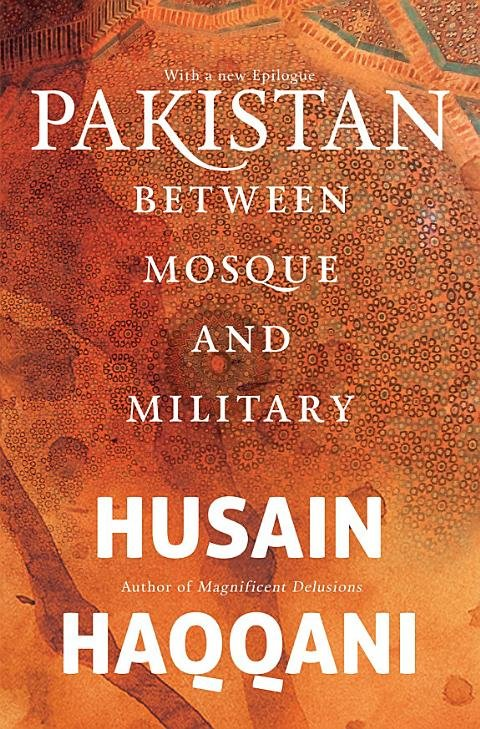
Pakistan Between Mosque and Military
Husain Haqqani
Haqqani looks at how Pakistan’s army and Islamist groups came to work together, and what that tie did to the country’s search for an identity and for security.
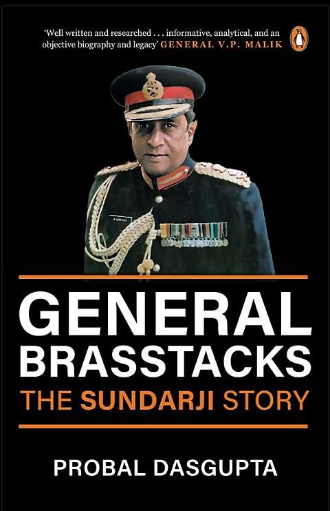
General Brasstacks: The Sundarji Story
Probal Dasgupta
A biography of General Krishnaswamy Sundarji, the Army chief behind Operation Brasstacks. It shows his part in reshaping the Indian Army in the 1980s.
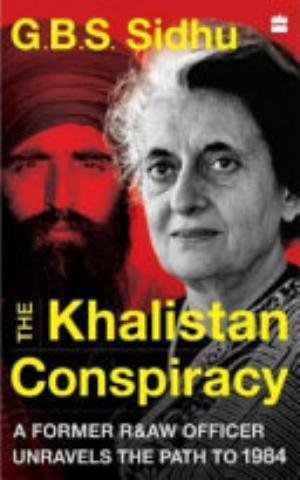
The Khalistan Conspiracy
G. B. S. Sidhu
A former R&AW officer’s account of the Khalistan movement in the 1980s. It covers the intelligence side of the story and the politics that surrounded it.
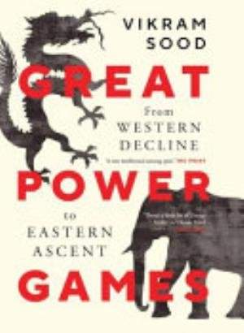
Great Power Games
Vikram Sood
A former R&AW chief’s account of a world order in flux, from the end of the Second World War to the present. Sood frames it as a shift from Western decline to Eastern ascent and reads India’s place in it through intelligence and statecraft.
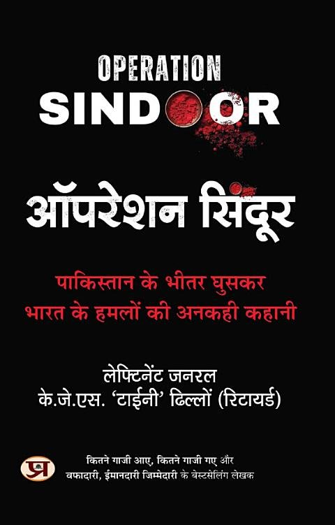
Operation Sindoor: The Untold Story of India’s Deep Strikes Inside Pakistan
Lt Gen. K. J. S. ‘Tiny’ Dhillon (Retd)
A retired general’s account of Operation Sindoor, India’s strikes inside Pakistan in 2025, and the military thinking behind them.
1962: The War That Wasn’t
Shiv Kunal Verma
A detailed military history of the 1962 war with China, built on field visits, regimental records and interviews with officers who were there. Verma goes back over how the war is usually told.
World Order
Henry Kissinger
Kissinger walks through how Europe, the Islamic world, China and the United States each built their own idea of order, and why that patchwork is straining now. I read it alongside Acharya and the multiplex literature.
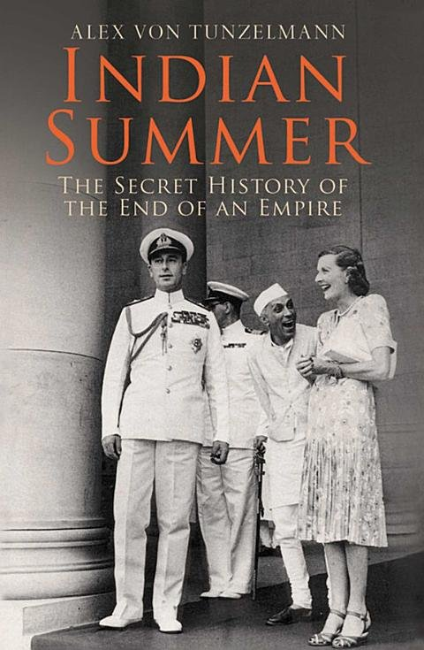
Indian Summer: The Secret History of the End of an Empire
Alex von Tunzelmann
A narrative history of the last years of British India, told through Mountbatten, Nehru, Jinnah, Gandhi and Edwina. It reads quickly and is good on how personal chemistry shaped the end of the empire.

The New World: 21st Century Global Order and India
Ram Madhav
Madhav’s view of the changing global order and where India sits in it. I reviewed it for India’s World Magazine in November 2025.
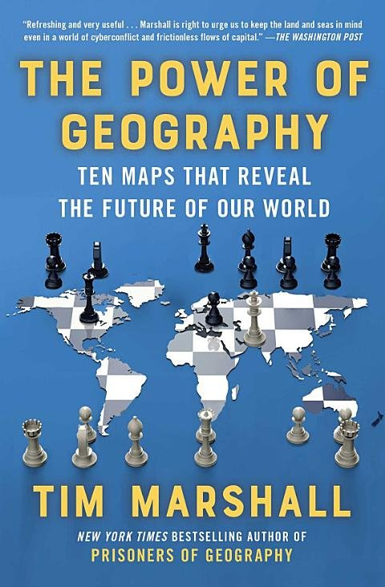
The Power of Geography
Tim Marshall
Marshall’s follow-up looks at more places where geography still sets the limits, from Australia and the Sahel to space. It is a quick way to see how popular geopolitics describes the regions I work on.
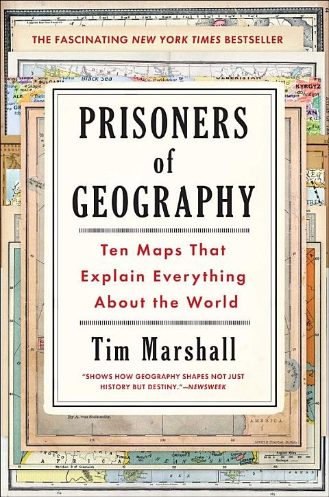
Prisoners of Geography
Tim Marshall
Marshall explains how rivers, mountains and coastlines keep shaping what states can do, one region at a time. Easy to read, and a good first look at the map.
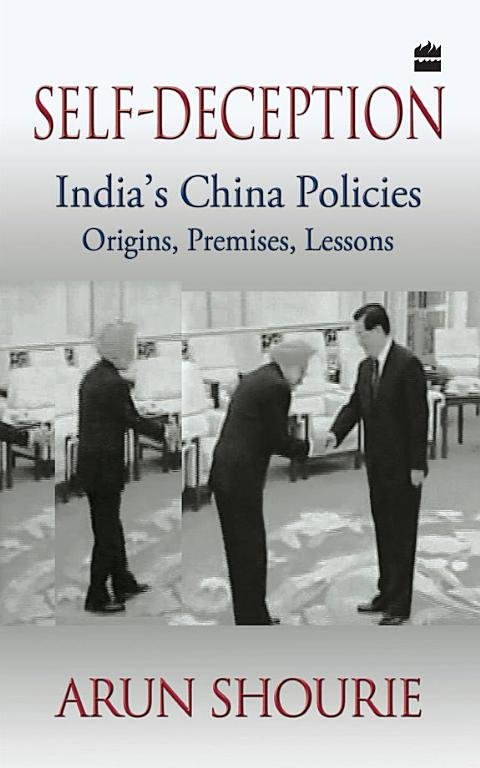
Self-Deception: India’s China Policies
Arun Shourie
Shourie’s sharp critique of India’s China policy, arguing that the same mistaken assumptions kept coming back. I checked it against the archival accounts to see where the record disagrees.
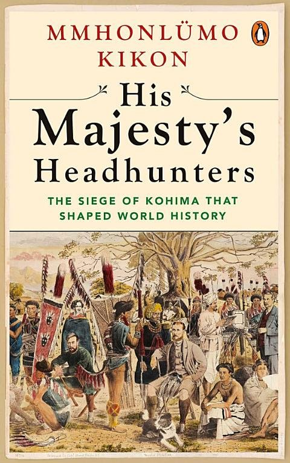
His Majesty’s Headhunters: The Siege of Kohima that Shaped World History
Mmhonlümo Kikon
An account of the 1944 Siege of Kohima with the Naga people at the centre. Kikon argues that the battle, sometimes called the Stalingrad of the East, mattered far beyond the hills of Nagaland.
Rising to the China Challenge: Winning Through Strategic Patience and Economic Growth
Gautam Bambawale
Bambawale, a former ambassador to China, argues that after Doklam and Ladakh India should expect a long and hostile relationship. His answer is strategic patience and economic growth.
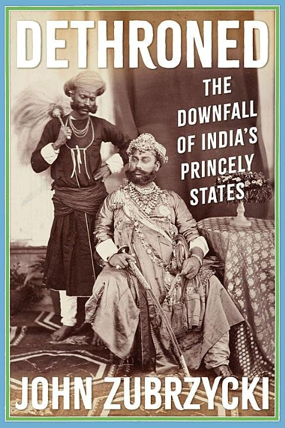
Dethroned: Patel, Menon and the Integration of Princely India
John Zubrzycki
How the Indian princes went from Britain’s most loyal allies to the losers of independence. Zubrzycki tells it as a story of promises, pressure and intrigue as the states were drawn into the Union.
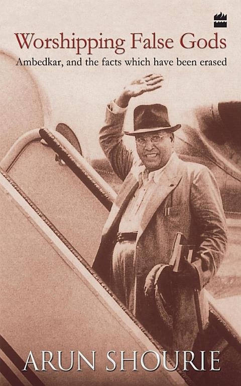
Worshipping False Gods
Arun Shourie
A hard-hitting critique of Ambedkar and his place in Indian politics, first published in 1997 and still argued over. I read it for the debate around it as much as for its claims.
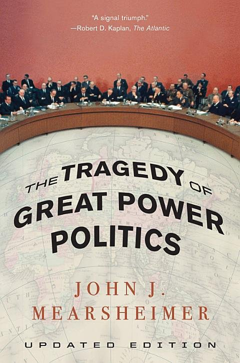
The Tragedy of Great Power Politics
John J. Mearsheimer
The standard statement of offensive realism: great powers fear each other, so they try to be as powerful as they can. I go back to it whenever I need the material-power view of rising powers.
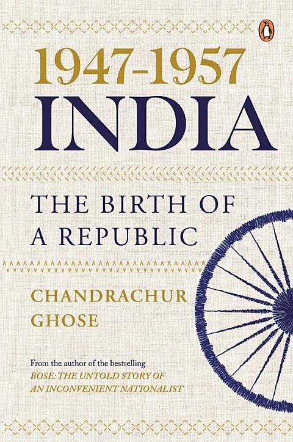
1947-1957, India: The Birth of a Republic
Chandrachur Ghose
A look at the first ten years of independent India, from 1947 to 1957, drawing on archival material. It covers the choices that set the course of the republic and is useful background for the Nehru years.
The Policy Pivot: Inside India’s Strategic Shift
Edited by Ajay Khanna and Rahul Sharma
An edited volume on India’s shifting policy ecosystem. The contributors write about governance, corporate responsibility and public affairs, so it reads as policy more than foreign policy.
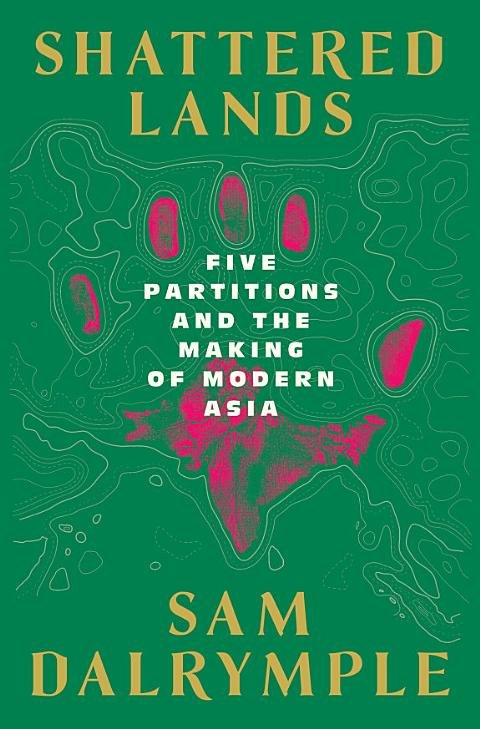
Shattered Lands: Five Partitions and the Making of Modern Asia
Sam Dalrymple
Dalrymple tells the whole story of how the Indian Empire was broken up, through five partitions and not only the one of 1947.
Overreach: How China Derailed Its Peaceful Rise
Susan L. Shirk
Shirk, a former US official, argues that Xi Jinping’s more assertive foreign policy gave up China’s earlier cautious rise and ended up hurting China itself.
Hedgewar: A Definitive Biography
Sachin Nandha
A biography of K. B. Hedgewar, who founded the RSS in 1925, and the world he worked in. It is a way into the organisation’s origins.
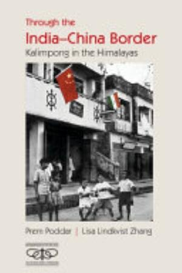
Through the India-China Border: Kalimpong in the Himalayas
Prem Poddar & Lisa Lindkvist Zhang (eds.)
Uses British, Chinese and Indian archives to look at Kalimpong as a border town. It shows how a place on the frontier helps explain the Tibet question in India-China relations.
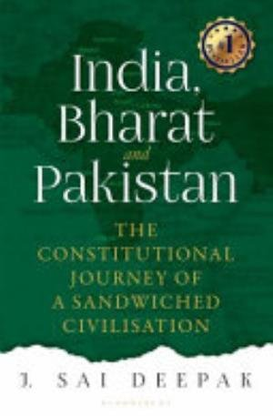
India, Bharat and Pakistan
J. Sai Deepak
The second book of the Bharat Trilogy, on the constitutional journey of what the author calls a sandwiched civilisation. I read it as a clear statement of the civilisational view of the Indian state.
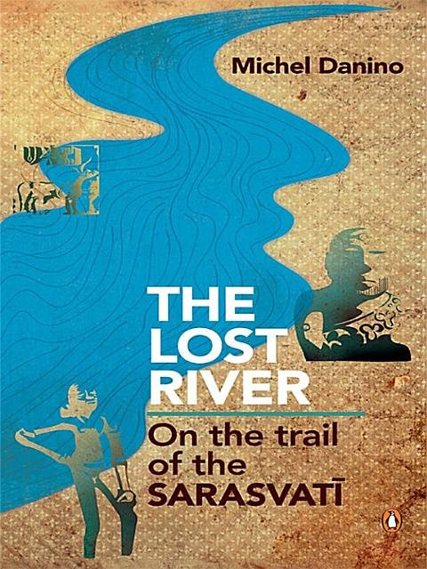
The Lost River: On the Trail of the Sarasvati
Michel Danino
Danino argues that the Sarasvati was a real river and asks what that would mean for early Indian history. The argument is still live among historians and archaeologists.
The Sky Warriors: Operation Sindoor Unveiled
Vishnu Som
An inside account of Operation Sindoor from the pilots and planners who carried it out, with the air campaign at the centre.
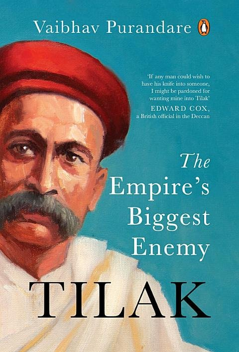
Tilak: The Empire’s Biggest Enemy
Vaibhav Purandare
A biography of Bal Gangadhar Tilak, whom the British counted among their most dangerous opponents. It follows his politics and his idea of self-rule.
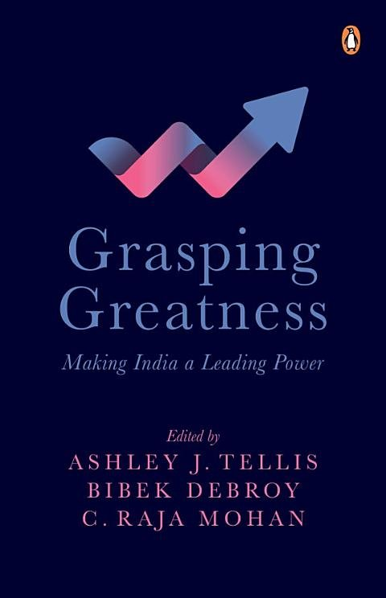
Grasping Greatness: Making India a Leading Power
Ashley J. Tellis, Bibek Debroy & C. Raja Mohan
An edited volume on what it would take for India to become a leading power. It speaks directly to the question of how aspiration turns into standing.
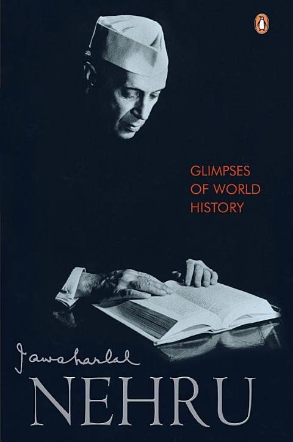
Glimpses of World History
Jawaharlal Nehru
Letters Nehru wrote to his daughter Indira from prison in the early 1930s, surveying the whole sweep of human history. They show how he read the world long before he had to run a country.
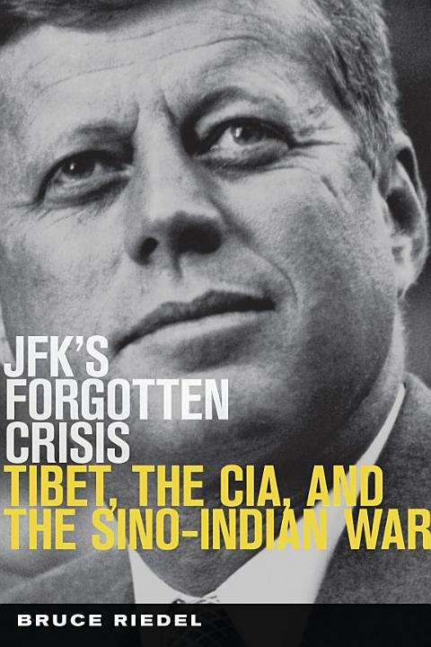
JFK’s Forgotten Crisis: Tibet, the CIA, and the Sino-Indian War
Bruce Riedel
Riedel rebuilds the American and CIA role around Tibet and the 1962 war from intelligence records. I read it next to Verma’s 1962 and Rao’s Fractured Himalaya.
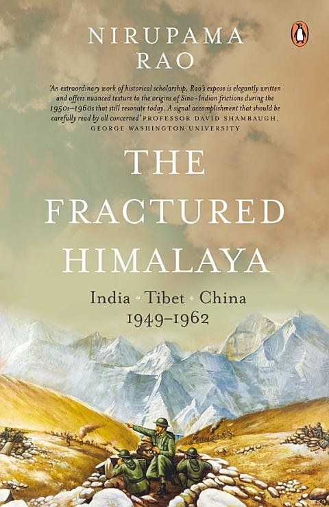
The Fractured Himalaya: India Tibet China 1949-1962
Nirupama Rao
A former Foreign Secretary’s account of the early years of India-China relations, from 1949 to 1962, using declassified material. It is central to my paper on recognition signalling.
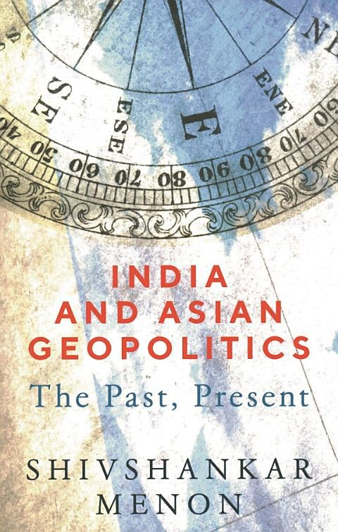
India and Asian Geopolitics: The Past, Present
Shivshankar Menon
A former National Security Adviser sets out how India should think about the shifting balance in Asia. It gives the practitioner’s view of questions I treat theoretically.
Photographs
Talks and teaching.
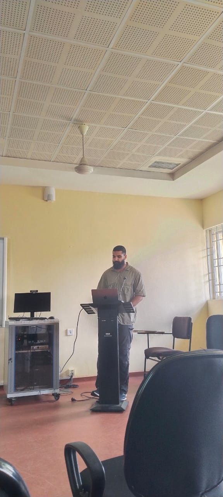
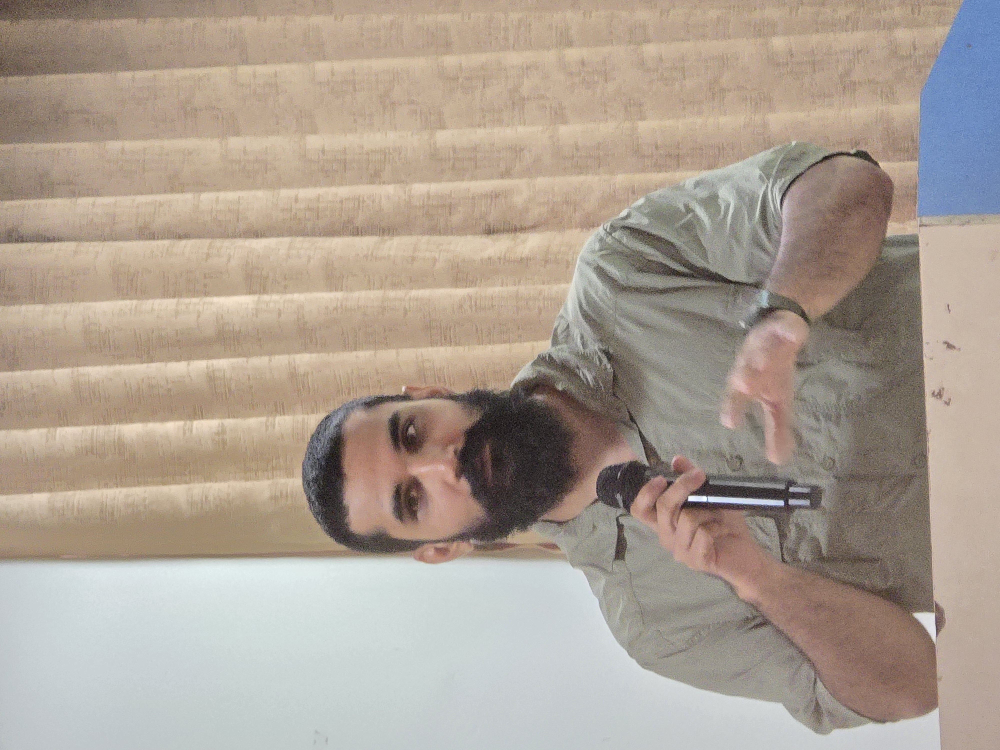
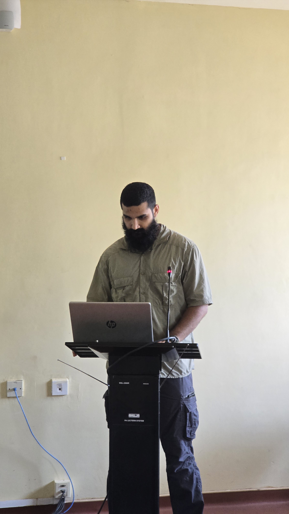
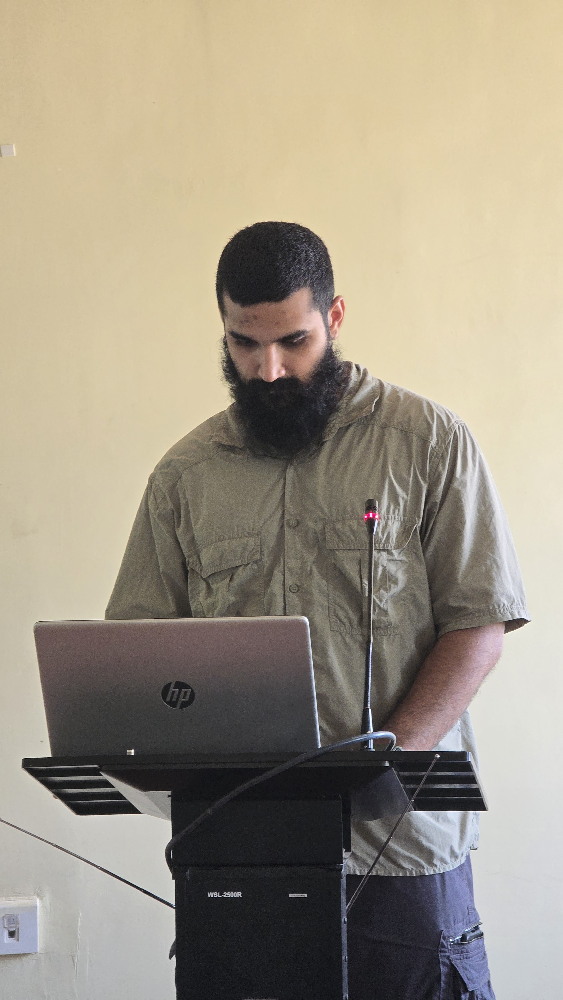
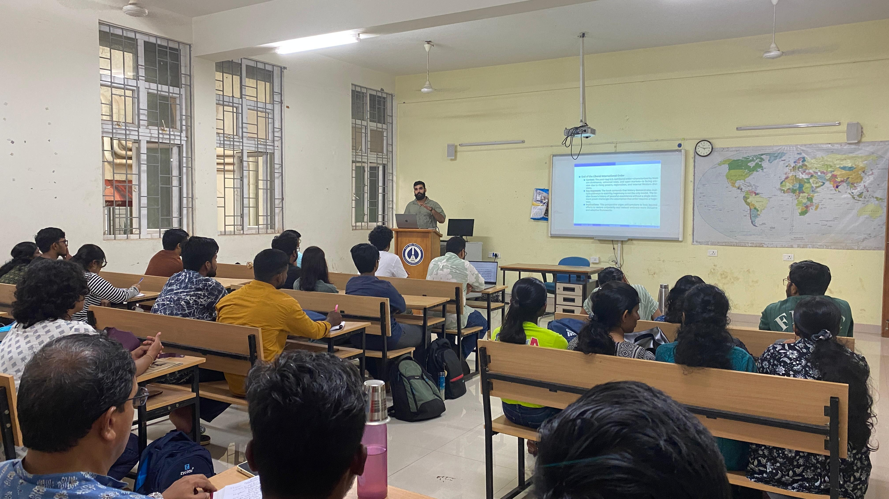
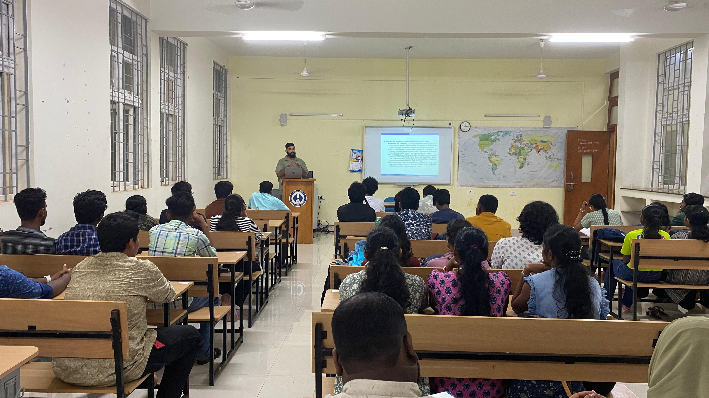
Contact
For academic correspondence, please write to the address below.
Department
Department of International Relations and Political Science
Central University of Kerala
Kasaragod, Kerala 671316, India
Academic profiles
ORCID (opens in a new tab) · Google Scholar (opens in a new tab)